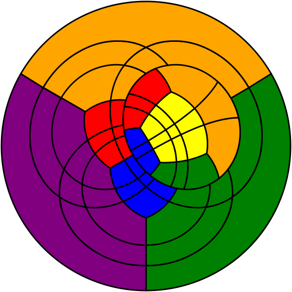

Personal Projects
Presentation on untied fixed pointsThe linked slides present the background mindset. The exercises linked from the slides reveal the full power of the concept. |
 |
Flat representation of Rubik's cubeWhat if you could view all sides of the Rubic's cube at the same time? |
 |
Walking robotsVarious experiments with building walking robots. Includes instructions. |

|